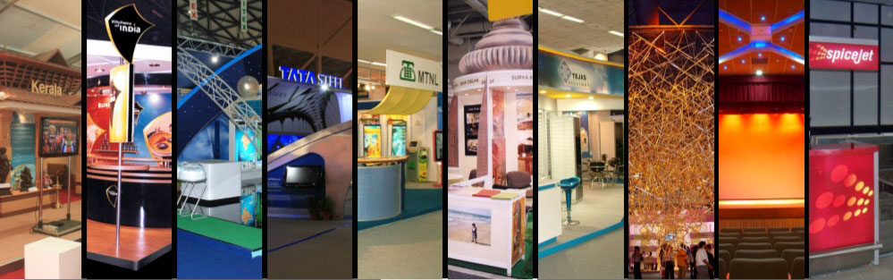
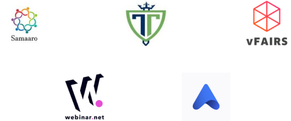
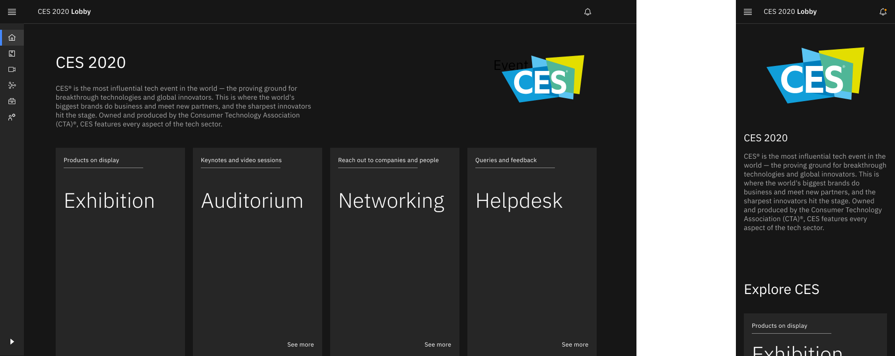
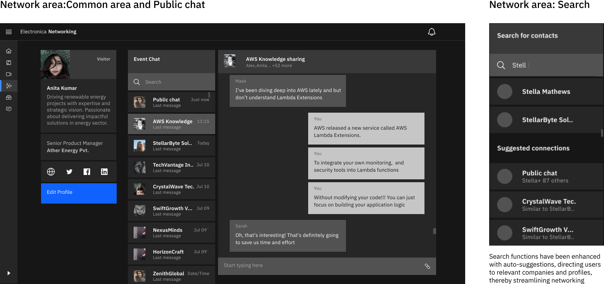
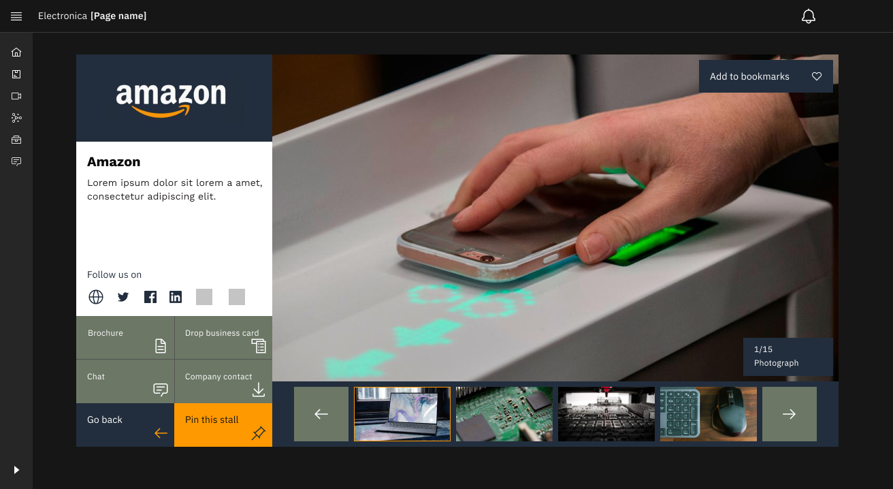
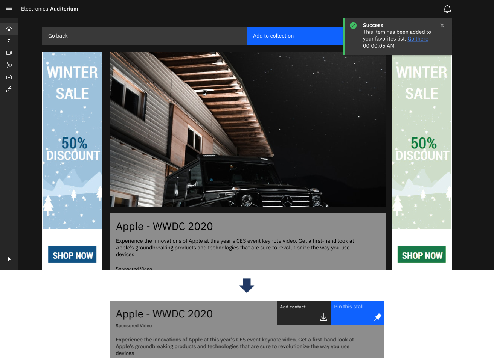
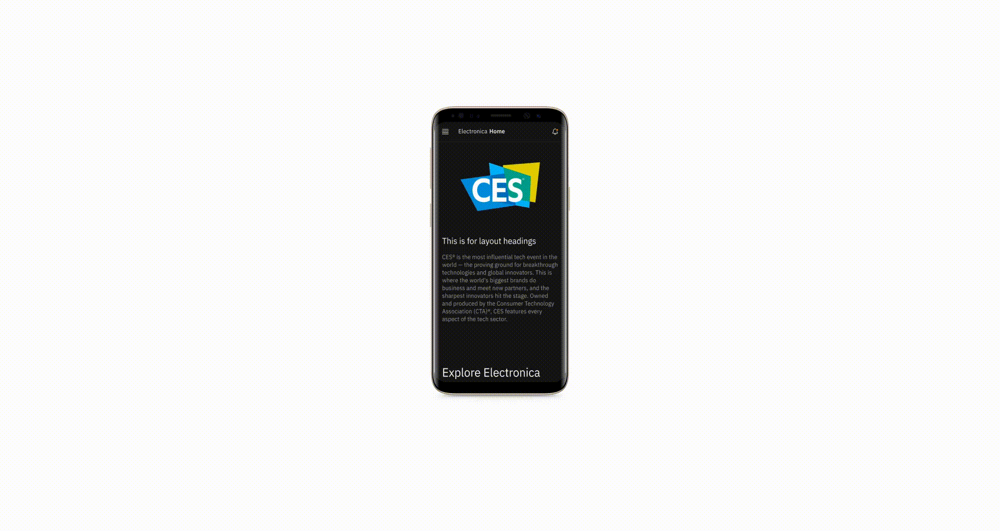
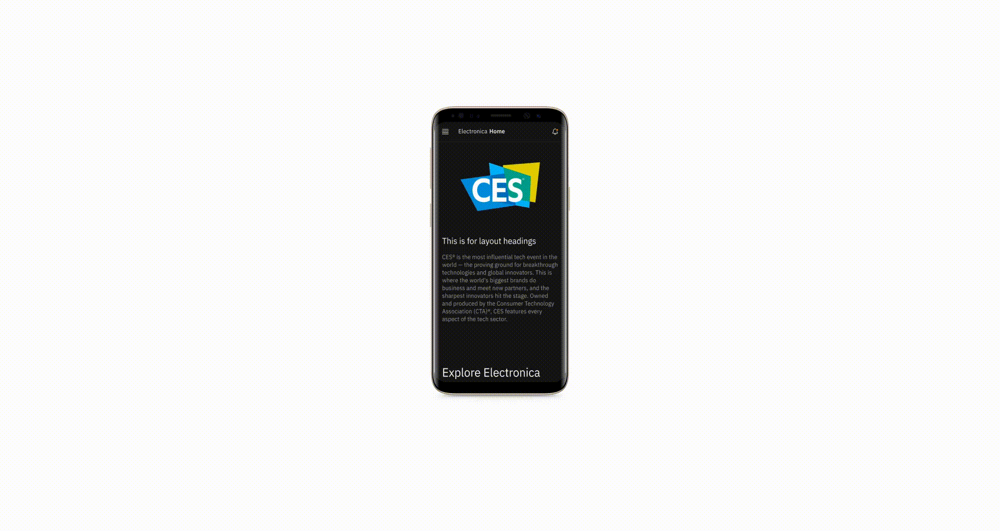

Team
Veeramanoharan (Product Designer)
M. Yaseen (PM)
Naveen (Software Engineer)
Tools
Figma
Miro
Timeline
Eight weeks
May - June 2020
Brief
The pandemic fuelled the demand for virtual events, prompting P&I, India's first ISO-certified Exhibition
Design and Events company, to look for ways to improve its digital exhibition capabilities and create more
innovative and immersive solutions.

I was tasked with the design a versatile, user-friendly virtual events platform tailored to various business
domains. The platform was to provide a customizable and immersive experience, while maintaining ease of
navigation and accessibility, thereby enabling exhibitors, and attendees to engage effectively
Problem
P&I, an established name in Exhibition Design and Events, had to pivot to digital solutions due to the
disruptive impact of the pandemic on physical events.

- Physical events have scalability issues and limited reach, leading to a rise in demand for virtual events during the pandemic.
- Existing virtual platforms often lacked user-friendly interfaces, engagement, and social interaction. These platforms also struggled with flexibility and customizability for hosting different types of events.
- Many users needed a lightweight, yet feature-rich event platform due to limited bandwidth during the pandemic.

Research
Addressing these problems required understanding the user's expectations and experiences with virtual events
platforms. Hence, we designed a user research plan with specific research questions::
- User Expectations
What do users expect from a virtual events platform?
- User Navigation and Interaction
How do users navigate and interact with existing virtual events platforms?
- Important Features:
What features and aspects of a virtual event are most important to users?
- Social Interaction:
How do users perceive and engage with networking and social interaction opportunities in a virtual
context?
Understanding user needs and pain points was our first step in creating an effective solution. Through
remote interviews and online discussions, we gathered valuable insights about what users expected from a
virtual event platform.
Since the project was conducted during the pandemic, it was challenging to
conduct
physical interviews and discussions with the stakeholders. From the initial research, we found
Desired Features:
Users expected an easy-to-use, reliable platform with minimal technical glitches,
high-quality uninterrupted audio/video streaming, and interactive experiences.
Pain Points:
Users expressed concerns over unstable connections, lack of interactive features, monotonous
nature of online events, and security of their data.
Competitor Analysis

We conducted a competitive analysis to identify strengths, weaknesses, and gaps that our platform could
fill.
The findings revealed that while basic engagement features were common, immersive experiences were lacking,
customization options were not user-friendly, and video streaming quality was inconsistent.
This paved the way for design opportunities:
1. Unique Engagement: We could leverage Unity-based interactive 3D models.
2. Enhanced Interaction: Enhancing interaction during video sessions could increase
engagement.
3. Intuitive Interface: A more intuitive interface which sufficient flexibility for
different events could set
us apart.
Insights and Next Steps
Using these insights, we created user personas and prioritized features to guide our design decisions.
Feature Prioritization: We also compared features across different platforms and
prioritized
features like easy navigation, high-quality streaming, networking opportunities, and chat support
center.etc.
After several rounds of discussions, we decided to focus on attendees as they are the primary users driving
event success. Their challenges in networking and navigating virtual stalls informed our design
improvements. Enhanced attendee experience benefits all stakeholders by boosting engagement and
participation.Hence,
"We decided to prioritize the app mainly for attendees and create user flows for the attendees"
We focused on designing a smooth user flow that prioritized the attendees' journey, from registration to attending the event and networking with other participants.

Ideation
I began by sketching a grid-based layout that could adapt to different screen sizes. I conducted experiments to explore different placements for key elements such as navigation, content area, and chat functions. Additionally, I created sketches of various exhibit area layouts, utilizing cards or tiles to represent individual stalls. This initial exploration proved invaluable in visualizing the structure and interaction with media content.

I captured the core features of dashboard using the low fidelity sketches. These helped in getting quick feedback and help us narrow down the required features. This helped in creating the site map that helped in final design ideaitons.

Prototype
To build an intuitive and efficient interface, I incorporated the IBM's Carbon Design System in the
platform's development. This robust design system, recognized for its comprehensive library of components
and patterns, provided a solid foundation for our design process.
Choosing a sleek web design over a 3D heavy lobby for our Virtual events platform was primarily due to user
accessibility, performance, content focus, ease of development, and inclusivity. A sleek design is easier to
navigate, performs better across devices, keeps the focus on content, is simpler to maintain, and caters to
users with varying tech proficiency. While 3D environments can be immersive it can also be cluttered whereas
our design ensures a user-friendly, performance-optimized, and accessible experience for all attendees.
Responsive web platform
To cater to users across various devices, our home screen design is responsive, adapting to desktops,
tablets, and smartphones seamlessly. The user-centric design ensures easy navigation, irrespective of the
device used.

Group chats and Networking area
The chat and networking area mirror interfaces of popular apps like Zoom and WhatsApp, promoting familiarity
and easy contact sharing. Search functions have been enhanced with auto-suggestions, directing users to
relevant companies and profiles, thereby streamlining networking.


Using law of familiarity to make the call and chat interfaces more intutive and usable
Exhibit area screens
The exhibit area displays products via a captivating, immersive 3D experience. We've optimized the viewport
to prioritize product display, reducing distractions. A bookmarking feature on product profiles allows
attendees to curate their exhibit journey, saving and revisiting their favourite stalls and products with
ease.

Iterative User Testing and Refinements
Iterative User Testing and Refinements
We facilitated user testing with our high-fidelity prototypes, obtaining critical feedback from potential
attendees. The interactive stalls and networking features were particularly well-received, indicating our
user-centric approach was effective. However, this exercise also illuminated areas requiring enhancements.
The Keynote video section was one such aspect. Based on user feedback, we saw the necessity to incorporate a
Call to Action (CTA) feature. By implementing this, we aimed to streamline the process for users to connect
with relevant companies and speakers, further enhancing the overall user experience.
The Auditorium section highlights pre-recorded keynote videos, ensuring a lag-free and high-quality viewing
experience. By offering pre-recorded keynotes, the platform prioritizes uninterrupted learning and
engagement while providing flexibility for users to pause, rewind, or rewatch segments at their
convenience.

Before and after inclusion of CTA for networking and stall visits
Final designs
 


Reflections
Upon reflection, we learned several key lessons:
1. Attendee-Centric Design: Prioritizing the needs and expectations of attendees was
paramount in designing
a platform that delivers value and enhances the event experience.
2. Iterative Testing: Regular and iterative testing at every design stage was crucial in
refining our
solution, ensuring it catered to attendee needs effectively.
3. Collaboration: Collaborating with various stakeholders, including attendees, event
managers, and sponsor
companies, enriched our design process, allowing us to accommodate diverse needs and expectations.
4. Pandemic-Era Design: Adapting to the rapidly changing circumstances during the pandemic
was challenging
yet rewarding, pushing us to innovate and design for a new normal.